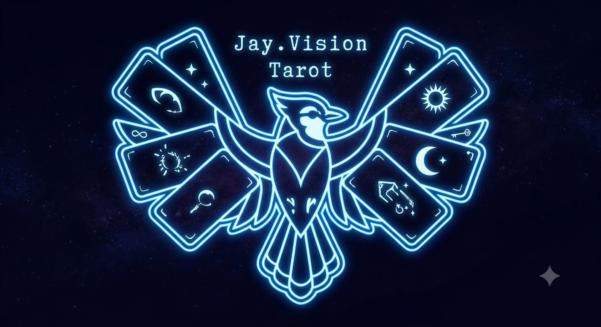

Unveiling the currents of your fate.
With a mystic lineage cascading back through generations, Jay was born into a profound spiritual current. Classically trained by his mother, an ordained witch, and sharing his gifts alongside his warlock brother, Jay offers an enchanting, outside-the-box approach to spiritual guidance.
Stepping beyond traditional boundaries, he cuts through the static of the mundane to deliver electrifying clarity and illuminating truth to those ready to seek it.
Using the Major and Minor Arcana to unveil the currents shaping your present and future. Honest, direct, and illuminating.
An outside-the-box approach to life's crossroads. Receive grounded, empathetic counsel drawn from deep spiritual intuition.
A profound exploration into your spiritual blockages and energetic alignments. For those ready to look beyond the veil.